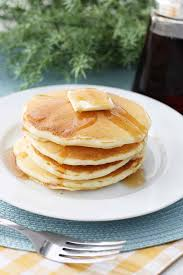

Pancake

Description
A pancake is a flat type of batter bread like cake, prepared from a batter that contain eggs, milk, and butter, and then cooked on a griddle or frying pan
Ingredients
- 1 cup all purpose flour
- 2 tbsp sugar
- 3 tsp baking powder
- 1/2 tsp salt
- 1 cup milk
- 2 tbsp melted butter
- 1 large egg
- 1 tbsp vegetable ol
Steps
- In a small bowl, whisk together flour, sugar, baking powder, and salt; set aside.
- In a medium bowl, whisk together milk, butter (or oil), and egg.
- Add dry ingredients to milk mixture; whisk until just moistened. (Do not overmix; a few small lumps are fine.)
- Heat a large skillet (nonstick or cast-iron) or griddle over medium. Fold a sheet of paper towel in half, and moisten with oil; carefully rub skillet with oiled paper towel.
- For each pancake, spoon 2 to 3 tablespoons of batter onto skillet, using the back of the spoon to spread batter into a round.
- Cook until surface of pancakes have some bubbles and a few have burst, 1 to 2 minutes.
- Flip carefully with a thin spatula, and cook until browned on the underside, 1 to 2 minutes more.
Home